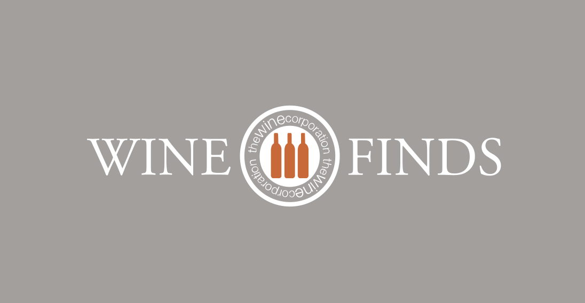

The Best Craft Wine in California
1956
Our Sauvignon Blanc wine was entered for the first time in a competition
and immediately received this award. Experts noted the amazing aroma and
luxurious taste of our wine. This award has become an important impetus
for the development of our company.

The Most Intense Red Wine
1992
In 1992, in conditions of very tough competition from winemakers in our
state, our wine managed to take first place. It was preferred by most
critics of Orange Wine Fund. They noted the bright and rich taste of our
Pinot Noir, its ruby color, and intense aroma.

Year's Best Chardonnay
2016
Our Chardonnay got a gold medal at the Wine Corporation Annual Contest.
Our wine scored the highest number of points - 99 out of 100 possible,
and was rated by experts and critics as “amazing”. By the way, a few
bottles of Chardonnay produced in 2016 are still on sale.

The Best American Riesling
2022
In 2022, our wine was presented in this competition among all US wine
producers for the first time. And right off the bat, it was able to get
the highest award. Experts rated our Riesling wine at 97 points out of
100 possible, noting its excellent taste.